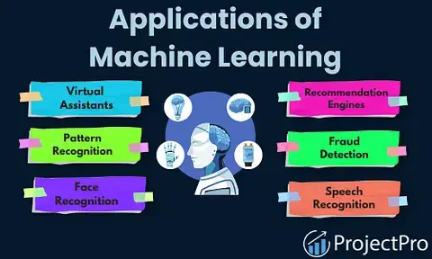
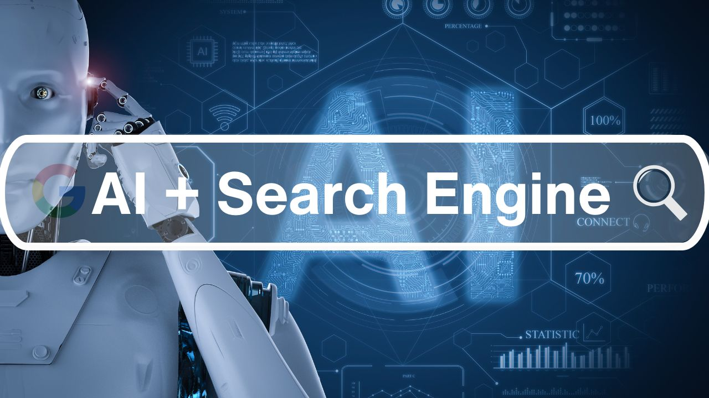
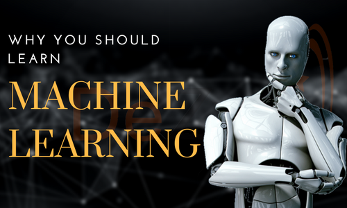
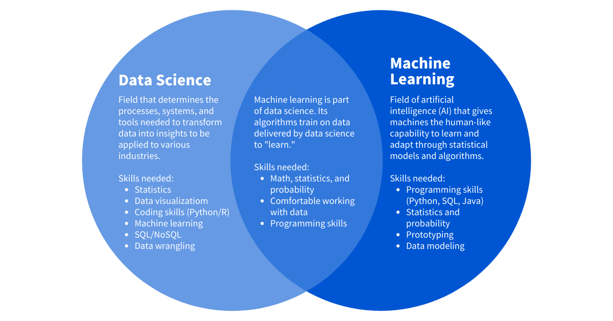

What is the difference between humans and machines? Well, the main difference is – or wait – was – that humans have brains while machines – do not! Machines were known to follow instructions until a revolutionary term, "Artificial Intelligence," came up! Machines nowadays can gain intelligence artificially through training and modeling.
What is the difference between humans and machines? Well, the main difference is – or wait – was – that humans have brains while machines – do not! Machines were known to follow instructions until a revolutionary term, "Artificial Intelligence," came up! Machines nowadays can gain intelligence artificially through training and modeling.
What is Machine Learning? - Definition
Why is it called artificial? Because machines can still learn only based on information and facts – they don't have emotions yet. A machine learns from past experiences, data collected from various sources, or even from some form of interaction with humans. This process where a machine learns is called machine learning.
A simple definition of machine learning Machine learning is a type of Artificial Intelligence where machines can learn on their own by experience, without any explicit programming. The experience comes from learning and training with the help of huge datasets collected from various sources. The learning and training process starts with processing and analysis of the data, like finding similar patterns, trends, and instructions that help machines give better results with each iteration, eventually making better business decisions without any human intervention.
Applications of Machine Learning
Before we set on to describing more about machine learning, let me give you some examples of ML which we use almost every day:
1. Amazon/Netflix recommendation system

Whenever we buy a product on Amazon, the site gives recommendations to purchase related items. For example, if you purchase a phone, Amazon suggests you buy a cover, earphones, or some other accessories that go with the phone. How does it know what to recommend? Why doesn't it recommend you buy a book? That's because its ML algorithm would have understood the trends from users who have purchased similar items along with the phone.
So, now it knows that a phone can be related to a charger, Bluetooth device, headset, flip cover, and more. Amazon also shows you what other phones were viewed by the other customers who viewed this phone. This helps you make better choices and understand the general preferences of many people.
Netflix's recommender system works on the same lines. It tries to understand what kind of movies or shows you like to watch and then suggests and shows you other shows with a similar genre. This makes it easier to filter out what you like rather than searching through n number of shows to find the one you want.
2. Search engine results
There has been a tremendous amount of improvement in the way we receive search engine results from Google, Bing, and other engines. These engines collect data and understand how the thought process of a user works.
For example, if someone searches for 'Apple,' are they searching for the fruit apple or Apple, the company? It displays results based on how many users have previously searched for the 'fruit' and the 'company'; if more people have searched for 'Apple Inc' in the past, it would know that there are more chances that this user is searching for 'Apple Inc' too. Search engines display results based on various complex algorithms and criteria where the page with the best ranking is shown on top.
3. Alexa/Siri/Cortana
"Alexa, what is the weather like today in Bengaluru?" "Today, in Bengaluru, Karnataka, the temperature is 26 degrees…." Are you familiar with this? Alexa, the voice-based system, can answer our questions and talk interactively with humans. It is built on NLP (Natural Language Processing), which means converting speech into words and sounds.
Your speech pattern is then analyzed by various speech-recognition systems, and the correct output is generated, which is spoken by Alexa to you. You can connect it to your home through an existing Wi-fi connection and have an individual account that you can manage through an app.
With that, you can keep reminders, set notifications, pre-set and play songs of your choice at different times and get real-time information.
3. Face detection (phone and Facebook)
.png)
Most smartphones now come with a face lock. The first time, you have to take your pictures from different angles, and the machine records essential parameters in the form of numerical code.
Next time, it recognizes your face, and you don't have to type a password to unlock your phone. Some phones have infrared sensors to detect the face in the dark. Facebook identifies you and your friends based on your previous photos. How? The face recognition system makes use of biometrics and 3D sensors to compare your facial features with those that it already has in its database.
4. Doctor phone apps

Phone apps that help patients identify medical problems based on a given set of symptoms are powered by AI. These apps ask simple questions to users that help in identifying and explaining the reasons for the symptoms. The apps then query their backend systems to get the relevant issue and suggest remedies.
If a patient needs assistance, the apps can also help get an appointment with the nearest available doctor. 80% of the time, these apps are as accurate as human doctors. This saves much of the time of the doctors as well as patients as simple medical issues no longer need a hospital visit.
5. Email spam detection and filtering

How does Gmail filter out spam messages from other essential and useful conversations on your email? Spam filter programs use algorithms and filters like Bayesian filters or heuristic filters to determine words that are unusual or suspicious, emails sent by suspicious or unknown ids, the reputation of the email sender, or subscriber engagement. Algorithms here are nothing but a set of rules that determine what has to be done when an email arrives.
There are many more applications of machine learning, like self-driving cars, detecting new diseases, dynamic pricing on ticket booking websites, fraud and risk detection, digital marketing, and more. Machine learning has put its foot into every possible domain, and technologists are trying their best to make machines self-sufficient and more intelligent through building and training models.
Machine learning can be done in 3 ways – when humans train the machine to give results in a particular way when the machine learns on its own without any intervention from humans, when the machine learns from experience (like a feedback system), and dynamically decides what to do to fetch maximum rewards and results.
Types of Machine learning
There are Three types of Machine learning :
- Supervised learning
- Unsupervised learning
- Reinforcement learning

1. Supervised learning
How does a kid learn addition? There is a book a teacher solves some sums written in the book to show the children how to solve the sums, and then the children solve some more for practice. The teacher uses a 'training dataset' to 'train' the children (model or machine). Once the children (model) get trained, they start solving the problems on their own using a new dataset.
Same way, once a model is trained, it can make its predictions and give output for new datasets. Some common examples of supervised learning are the recommendation systems used by Amazon, Netflix, and more, as commute time prediction based on maps, traffic, weather, time, and other factors.
Classification – In a classification problem, the output variable is a category and not a continuous one. The model draws a conclusion from the values observed and predicts one or more values as an outcome — for example, speech recognition, biometric identification, and more.
Regression – In a regression problem, the output is a real value or a continuous value produced as a result of Y = f(X), where Y is the output obtained by using algorithms on X. The most common regression technique is the linear regression model.
Some examples of regression tasks are predicting the value of the home loan for a customer, predicting the age of a person, getting the sales number for the next couple of months, and more. In short, regression is all about a single value, whereas classification is about classifying the data based on input data.
2. Unsupervised learning
This type of machine learning algorithm uses datasets that have input data without any labeled responses, unlike supervised learning. There is no need to supervise the model, and no manual intervention is required. The algorithm draws its conclusion by finding patterns or groupings in the dataset. This method is used in data mining for pattern mining and sequencing, medical imaging, object recognition, and; in genetic clustering.
Clustering – With clustering, similar items are grouped, and patterns are formed. This helps to understand similarities in a particular group and hence, various groups. For example, trends in the browsing pattern can be identified and clustered – how many people of the age group 20-30 years check their Facebook accounts during day time, what are the most trending topics on Instagram and Twitter, what are the nearby restaurants that serve Biryani, and more. The most popular clustering algorithms used today are K-mean clustering and Hierarchical clustering.
Association - For considerable datasets in the database, the association helps to find relationships between the variables in the dataset. For example, customers who recently booked a flight ticket might also need airport pick-up and drop and hotel accommodation, a person who just bought a laptop online, may need a laptop bag or a stand, unusual login, activities on a website, and more.
3. Reinforcement learning
Reinforcement learning is like a trial-and-error method to solve complex problems. For example, a child tries to jump a wall and fails many times but eventually learns how to do it. Same way, the learning models try to achieve a goal in a complex environment and try to fetch the maximum rewards.
Think of reinforcement learning as a game of 'Dave' or 'Mario' where you keep collecting points and move ahead to more complex levels. Some levels can be cleared in one go, whereas some need a higher number of trials and strategies. Machines now – can do this – without human intervention!
However, the current computer infrastructure is somewhat weak in exploring this superpower of a machine fully. A self-driving car is an example of reinforcement learning. In the future, this type of machine learning can prove to be the most powerful form of artificial intelligence.
Why should you learn Machine Learning?
Machine learning forms the core of Data Science, which is becoming a great career option now. With loads of data being analyzed every hour, every day, to provide new business insights, there would be no dearth of data science jobs in the years to come. All the business for data science comes from machine learning.
Even if you aim to become a data analyst or a data scientist in the future, Machine learning could be your starting point. It would give you the necessary exposure to see the big picture of the data science lifecycle . If you know ML, you can work in any domain in the future. Here are some key skills you need to learn to get machine learning job:
- Programming language ( Python /R/ Java )
- Statistics and probability
- Machine learning algorithms
- Data modeling, evaluation
- Distributed computing
ML algorithms
There are many algorithms used for machine learning each of which falls into one or more of the above learning types. Here are some of the top machine learning algorithms to start your ML journey –
- Linear regression – Suppose there are x input variables that determine the value of output variable Y. In linear regression, the relationship between Y and X is represented as a linear equation or a line, Y = a + bX, where a and b are intercept and slope of the line respectively.
- Logistic regression – For a binary classification of values, like true/false, yes/no, logistic regression is much suitable. The output is an S-shaped curve defined using the logistic function, h(x) = 1/(1 + e-x)
- Naïve Bayes – This method determines the probability of an event occurring (B) when the occurrence of another related event is known (A). The prior event A is true, and to determine whether the hypothesis B is also true (given P(A) is true), we use the formula, P(B/A) = (P(A/B)*P(B))/P(A)
- Classification and Regression trees (Decision trees) – One of the most powerful algorithms, decision trees are based on the answer to several questions to determine an outcome. For example, to know if a person aged 20 years will prefer to buy a laptop or groceries, the system will ask a few simple questions, like, is the person married, is he living with friends, does he have provision to cook, does he watch movies or pay bills online, etc…
- K-nearest neighbor – In this method, all the data is used for training (and none for testing). When a new instance is encountered, k nearest instances to the new instance are determined and the new instance is categorized as part of the nearest old instance.
- Random forests – Random forests combine several decision trees. The output of a random forest is the mean or median of the individual decision trees, by finding the random sampling or random subset of data.
- Principal Component Analysis (PCA) – In this method, the number of variables is reduced to make data exploration easy. These reduced set of variables are called principal components which are determined by capturing the maximum variance in the data. There is orthogonality between the components thereby creating zero or no correlation between the components.
- Apriori – This method operates on a database that contains lots of transactions, mines data to find associations between data. For example, if a person purchases a laptop, it is likely that he also purchases accessories like a laptop bag or headphones.
There are many more complex algorithms like SVM (support vector machines), deep learning algorithms like CNN (Convolutional Neural Network), DBM (Deep Boltzmann Machine), clustering algorithms like k-means and so on, which are out of scope for this article. You can choose to learn the algorithms based on their learning style or similarity between the algorithms. For example, you can learn all the supervised learning algorithms first, or you can choose similar algorithms like decision trees and random forest, or, linear regression and SVM, etc.
Choosing your language to write ML algorithms
The most popular programming languages as of today, to write ML algorithms are Python and R . Other languages that are also popular and widely used are C++, Java, C# and JavaScript. These languages have loads of libraries and tools that help build complex algorithms. If you haven’t worked on any of the above languages, Python will be your best starting point.
How to start learning ML
Machine learning is certainly an exhaustive subject and requires a lot of technical knowledge. But if you follow a proper approach to learn, you can overcome all the obstacles and make your learning interesting –
- Identify the prerequisites – Knowing linear algebra, calculus, statistics and Python (or R) is essential. Just the basics (working knowledge).
- Learn the ML terminologies – some common terms used are model, learning, target, training, prediction/predictive, feature, labeling, etc… Know the meanings of these and other similar jargons.
- Types of machine learning – understanding each type will help you figure out which type you want to start your learning with. Generally, supervised learning algorithms are the easiest to start with.
- Learn the basics of data science – to fully appreciate the usefulness of ML, you should understand the data science lifecycle and understand various real-life examples where ML is used for business.
- Delve deeply into ML, one algorithm at a time – and don’t confuse yourself with others till you have fully grasped one.
Of course, there are plenty of tutorials and courses available on the internet. But, we would suggest you learn through books , which you can keep as a reference too. Online materials can further your knowledge by providing you access to real data sets for practice and mastering the field.
Machine learning vs Data Science
Data Science and machine learning go hand in hand. That is why it is essential to know where ML fits in the data science industry. ML is the core of data science where, based on the set of data, algorithms are built, machines are trained (or trained themselves), and the model is tested for accuracy and efficiency. Read this blog on the differences between ML and Data Science to get some insights into how the entire system works.
Summary
This article introduced you to the concepts and jargon of Machine learning, and some important pointers to where exactly ML fits into the entire data science process . We also learned about the usefulness and types of ML, and gently introduced ourselves to the various algorithms that are widely used. Learning about the applications of ML helped us understand why we should learn ML. Note that this is just an introductory article and in no way covers every aspect of machine learning. As a quick recap, here are some important characteristics of Machine learning –
- Machines can learn and enhance based on experience and observations.
- Increase in efficiency of utilization of structured and unstructured data to identify patterns, trends and perform predictive data analytics.
- Boost business operations by enabling better business decisions and accurate forecasting.
- Brings us one step closer to Artificial Intelligence, where humans and machines can be at par with each other in terms of thinking capabilities.
Feedback
- Send your Feedback to nigammishra826@gmail.com